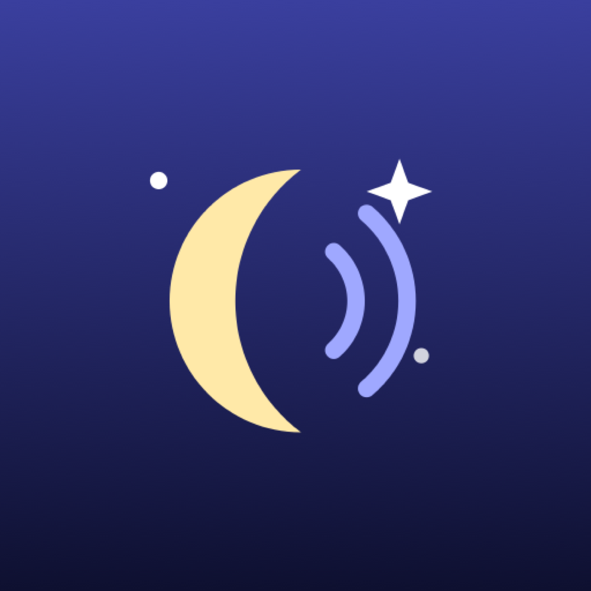
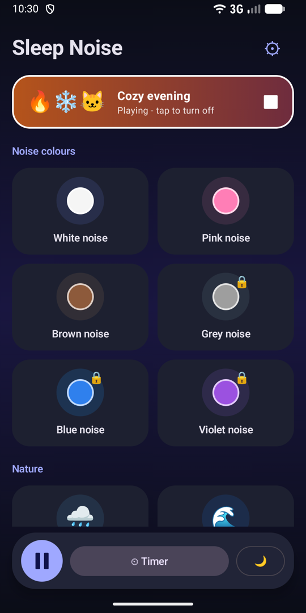
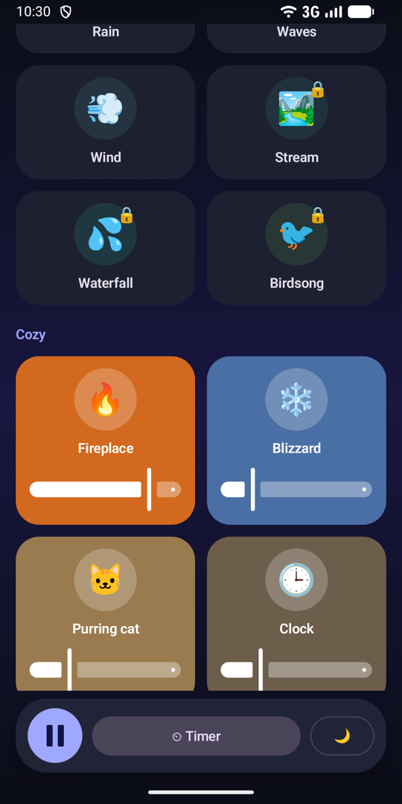
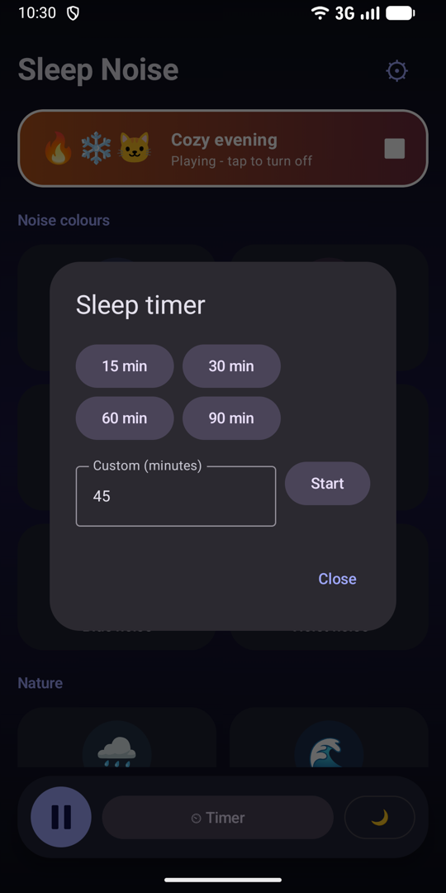

Szumy do snu
Dźwięki do spania, skupienia i relaksu. Miksuj je, ustaw timer, wyłącz ekran.
Pobierz z Google Play


Co dostajesz
- Kolory szumuBiały, różowy, brązowy, szary, niebieski i fioletowy szum, generowane na bieżąco w telefonie.
- NaturaDeszcz, fale morskie, wiatr, spokojny strumień, wodospad i śpiew ptaków.
- PrzytulnieTrzaskający kominek, zimowa zamieć, mruczący kot i dwa rodzaje zegarów.
- Własny miksKilka dźwięków naraz, osobna głośność każdego. Ostatni miks jest zapamiętywany.
- Timer snu15, 30, 60, 90 minut albo własny czas. Dźwięk łagodnie cichnie.
- Stworzone na nocCiemny motyw, czarny ekran nocny, gra przy wyłączonym ekranie, pauza po wyjęciu słuchawek.
Prosto i prywatnie
Bez konta, działa offline, darmowa i utrzymywana z dyskretnych reklam. Aplikacja nie zbiera danych osobowych. Zobacz politykę prywatności.